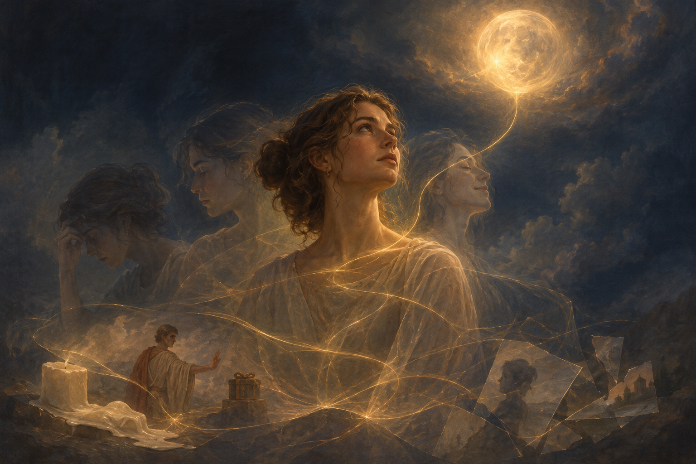

About our group
Our project brings Plutarch’s writing into conversation with Westworld to think critically about consciousness, the soul, memory, and personhood.
Meet the team
Andrew Lane
Andrew’s bio and personal exploration of consciousness through a Westworld journal will be added here.
Ashton Kallabat
Ashton’s bio and personal exploration of consciousness through a Westworld journal will be added here.
Leslie Bahk
Leslie’s bio and personal exploration of consciousness through a Westworld journal will be added here.
Madelynn Fraaza
Madelynn’s bio and personal exploration of consciousness through a Westworld journal will be added here.

Noor Mohajir
Noor’s bio and personal exploration of consciousness through a Westworld journal will be added here.
Tiwa Ojutiku
Tiwa’s bio and personal exploration of consciousness through a Westworld journal will be added here.